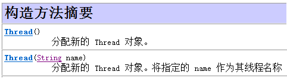
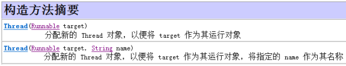
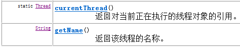

1. 线程的概念
进程：进程指正在运行的程序。确切的来说，当一个程序进入内存运行，即变成一个进程，进程是处于运行过程中的程序，并且具有一定独立功能。
线程：线程是进程中的一个执行单元，负责当前进程中程序的执行，一个进程中至少有一个线程。一个进程中是可以有多个线程的，这个应用程序也可以称之为多线程程序。
jvm启动后，必然有一个执行路径(线程)从main方法开始的，一直执行到main方法结束，这个线程在java中称之为主线程。## 2. 创建线程的方法
创建新执行线程有两种方法。
一种方法是将类声明为 Thread 的子类。该子类应重写 Thread 类的 run 方法。创建对象，开启线程。run方法相当于其他线程的main方法。 另一种方法是声明一个实现 Runnable 接口的类。该类然后实现 run 方法。然后创建Runnable的子类对象，传入到某个线程的构造方法中，开启线程。
### 2.1 Thread类
构造方法：

常用方法：

### 2.2 创建线程方法1——继承Thread类
创建线程的步骤：
1 定义一个类继承Thread。
2 重写run方法。
3 创建子类对象，就是创建线程对象。
4 调用start方法，开启线程并让线程执行，同时还会告诉jvm去调用run方法。 测试类
1 | public class Demo01 { |
* 自定义线程类
1 | public class MyThread extends Thread { |
线程对象调用 run方法和调用start方法区别？
线程对象调用run方法不开启线程，仅是对象调用方法。线程对象调用start开启线程，并让jvm调用run方法在开启的线程中执行。
2.3 创建线程方式2—实现Runnable接口
创建线程的另一种方法是声明实现 Runnable 接口的类。该类然后实现 run 方法。然后创建Runnable的子类对象，传入到某个线程的构造方法中，开启线程。
Runnable接口用来指定每个线程要执行的任务。包含了一个 run 的无参数抽象方法，需要由接口实现类重写该方法。
- 接口中的方法

- Thread类构造方法

创建线程的步骤。
1、定义类实现Runnable接口。
2、覆盖接口中的run方法。。
3、创建Thread类的对象
4、将Runnable接口的子类对象作为参数传递给Thread类的构造函数。
5、调用Thread类的start方法开启线程。
代码演示：
1 | public class Demo02 { |
- 自定义线程执行任务类
1 | public class MyRunnable implements Runnable{ |
线程类只是实现了Runable接口，还可以继承其他的类，避免了继承Thread类的单继承局限性。
创建Thread类的对象，只有创建Thread类的对象才可以创建线程。实现Runnable接口方式下，可以多个线程共享同一个目标对象，所以非常适合多个相同线程来处理同一份资源的情况。
实现Runnable接口的方式，更加的符合面向对象，线程分为两部分，一部分线程对象，一部分线程任务。继承Thread类，线程对象和线程任务耦合在一起。一旦创建Thread类的子类对象，既是线程对象，有又有线程任务。实现Runnable接口，将线程任务单独分离出来封装成对象，类型就是Runnable接口类型。Runnable接口对线程对象和线程任务进行解耦。
3. 获取线程名称
查阅Thread类的API文档发现有个方法是获取当前正在运行的线程对象。还有个方法是获取当前线程对象的名称。

- Thread.currentThread()获取当前线程对象
- Thread.currentThread().getName();获取当前线程对象的名称
1 | class MyThread extends Thread { //继承Thread |
通过结果观察，原来主线程的名称：main；自定义的线程：Thread-0，线程多个时，数字顺延。如Thread-1……
进行多线程编程时，不要忘记了Java程序运行是从主线程开始，main方法就是主线程的线程执行内容。4. 线程的匿名内部类使用
使用线程的内匿名内部类方式，可以方便的实现每个线程执行不同的线程任务操作。
- 方式1：创建线程对象时，直接重写Thread类中的run方法
1 | new Thread() { |
- 方式2：使用匿名内部类的方式实现Runnable接口，重新Runnable接口中的run方法
1 | Runnable r = new Runnable() { |
5. 线程池
线程池，其实就是一个容纳多个线程的容器，其中的线程可以反复使用，省去了频繁创建线程对象的操作，无需反复创建线程而消耗过多资源。
5.1 使用线程池方式1——实现Runnable接口
通常，线程池都是通过线程池工厂创建，再调用线程池中的方法获取线程，再通过线程去执行任务方法。
- Executors：线程池创建工厂类
- public static ExecutorService newFixedThreadPool(int nThreads)：返回线程池对象
- ExecutorService：线程池类
- Future<?> submit(Runnable task)：获取线程池中的某一个线程对象，并执行
- Future接口：用来记录线程任务执行完毕后产生的结果。线程池创建与使用
- 使用线程池中线程对象的步骤：
- 创建线程池对象
- 创建Runnable接口子类对象
- 提交Runnable接口子类对象
- 关闭线程池
代码演示：
1 | public class ThreadPoolDemo { |
- Runnable接口实现类
1 | public class MyRunnable implements Runnable { |
5.2 使用线程池方式2——实现Callable接口
- Callable接口：与Runnable接口功能相似，用来指定线程的任务。其中的call()方法，用来返回线程任务执行完毕后的结果，call方法可抛出异常。
- ExecutorService：线程池类
Future submit(Callable task)：获取线程池中的某一个线程对象，并执行线程中的call()方法
- Future接口：用来记录线程任务执行完毕后产生的结果。线程池创建与使用
- 使用线程池中线程对象的步骤：
- 创建线程池对象
- 创建Callable接口子类对象
- 提交Callable接口子类对象
- 关闭线程池
代码演示：
1 | public class ThreadPoolDemo { |
- Callable接口实现类,call方法可抛出异常、返回线程任务执行完毕后的结果
1 | public class MyCallable implements Callable { |
5.3 Future接口
Callable任务返回Future对象。Future 表示异步计算的结果。
Future接口中有如下方法：
boolean cancel(boolean mayInterruptIfRunning)：
取消任务的执行。参数指定是否立即中断任务执行，或者等等任务结束
boolean isCancelled() ：
任务是否已经取消，任务正常完成前将其取消，则返回 true
boolean isDone() ：
任务是否已经完成。需要注意的是如果任务正常终止、异常或取消，都将返回true
V get() ：
等待任务执行结束，然后获得V类型的结果。InterruptedException 线程被中断异常， ExecutionException任务执行异常，如果任务被取消，还会抛出CancellationException
V get(long timeout, TimeUnit unit) ：
同上面的get功能一样，多了设置超时时间。参数timeout指定超时时间，uint指定时 间的单位，在枚举类TimeUnit中有相关的定义。如果计算超时，将抛出TimeoutException
Future接口提供方法来检测任务是否被执行完，等待任务执行完获得结果。也可以设置任务执行的超时时间，这个设置超时的方法就是实现Java程序执行超时的关键。
5.4 实现线程池两种方式的区别
（1）Callable规定的方法是call()，而Runnable规定的方法是run()。
（2）Callable的任务执行后可返回值，而Runnable的任务是不能返回值的。
（3）call()方法可抛出异常，而run()方法是不能抛出异常的。
（4）运行Callable任务可拿到一个Future对象。